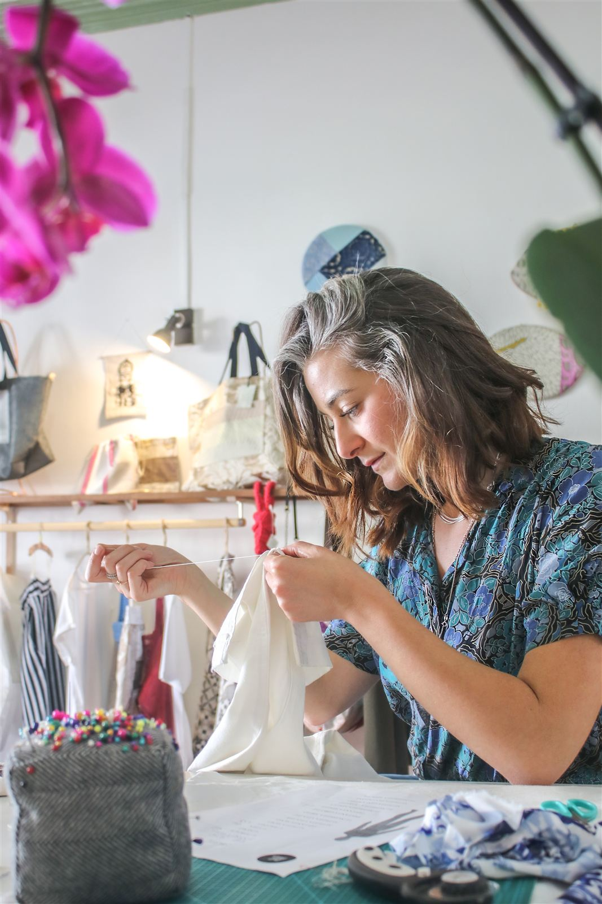

Lezioni private di cucito a Catania
Due ore, ago e filo, si parte da dove sei tu. Le lezioni le faccio nel mio studio in centro a Catania: siamo io e te, o al massimo un'altra persona insieme a te. Lo spazio è piccolo apposta, per restare vicini al lavoro.
- DoveCatania centro
- Durata2 ore
- Costo39 € la singola · 150 € 4 lezioni
- Periodoottobre – novembre
La prima lezione include la dispensa base di sartoria. Va bene anche se non hai mai cucito.

Cucire, riparare, trasformare i tuoi capi
Si parte dalle basi del cucito, poi si lavora su progetti scelti da te: imparare a cucire, modificare, riparare e reinventare i vestiti che hai già.
Le basi
Punti a mano, uso della macchina, come si prende una misura e come si taglia un tessuto.
Riparare
Orli, bottoni, cuciture aperte, strappi: i lavori che si rimandano sempre.
I tuoi progetti
Dalla seconda lezione si lavora su quello che vuoi fare tu: un oggetto, un capo, una trasformazione.
Scegli il giorno e l'orario
Tocca un orario libero: il messaggio per me si scrive da solo nel modulo qui sotto. Poi ti rispondo per confermare.
Calendario aggiornato al 17 ottobre 2026. Se non trovi un orario che ti va, scrivimi comunque: a volte si libera altro spazio.
a presto, Greta